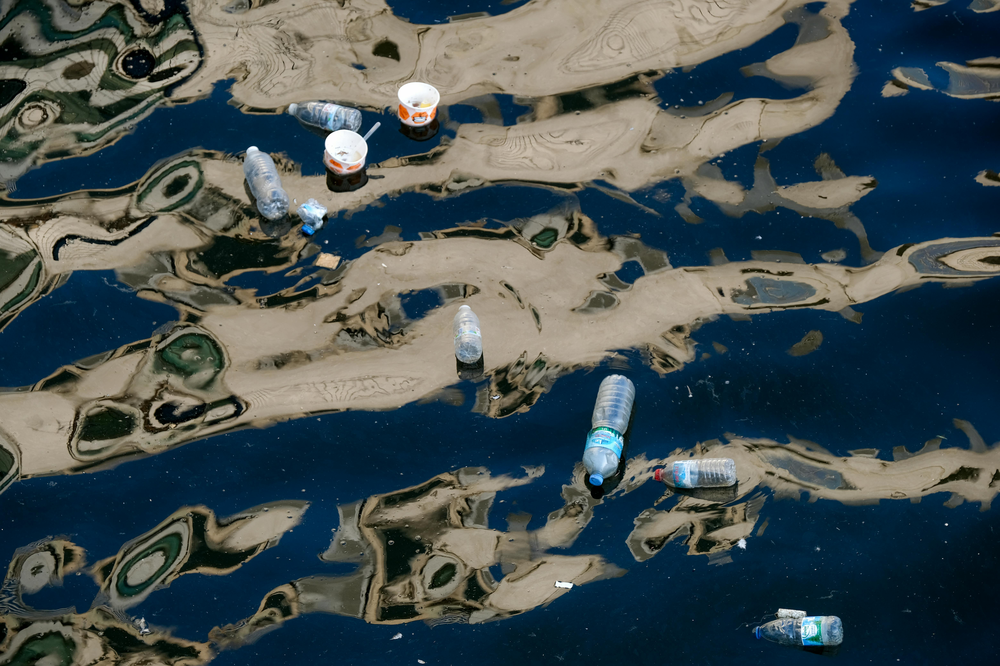

Welcome to the Fight Against Plastic Pollution
Plastic pollution in the oceans is a global problem affecting marine life, ecosystems, and even human health. Learn more about how we can combat this issue and protect our oceans.
Photo by Cagr KANMAZ from Pexels: Pexels.